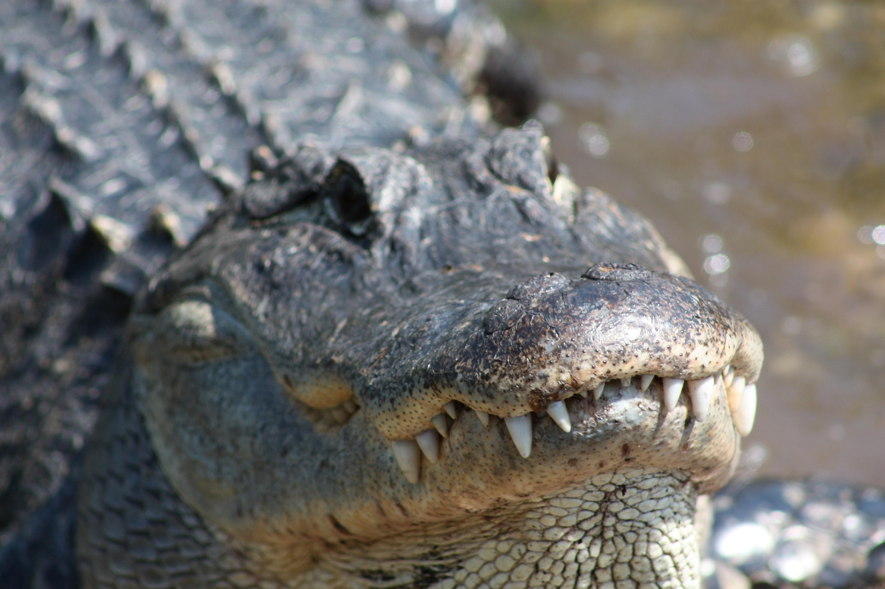

COCODRILO AMERICANO
Nombre
Nombre cientifico

El cocodrilo americano vive en zonas tropicales de América, como ríos, lagunas, manglares y costas. Se encuentra en lugares como México, Centroamérica y el norte de Sudamérica. Es un animal semiacuático, lo que significa que pasa tiempo tanto en el agua como en tierra. Es un depredador muy sigiloso: suele permanecer quieto en el agua esperando a que su presa se acerque para atacarla rápidamente. Es más activo durante la noche y le gusta tomar el sol durante el día para regular su temperatura.
Caracteristicas: